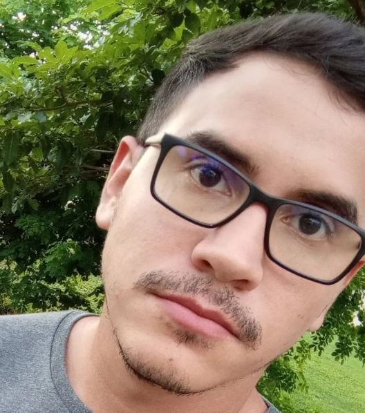

Lucas Eduardo

Resumo
Eu sou uma pessoa proativa, gosto muito de trabalhar com desafios
Educação
-
Tecnologo em Analise e desemvolvimento de sistemas - Estácio-FIC
(2019-2022)
Experiencia de trabalho
Analista de Suporte - Hospital IJF.
Junho 2020 - Dez 2020
- Auxiliar usuários com instruçoes de ferramentas
- Manutenção e instalação de equipamentos(Desktop, Impressoras)
- Instalação de ferramentas e sistemas
Analista de Suporte - Comunidade Catolica Shalom
Junho 2021 - Presente
- Auxiliar usuários com instruçoes de ferramentas
- Manutenção e instalação de equipamentos
- Criação de acesso a rede e orientções do mesmo
Habilidades
Curso e Certificados
- Curso Desemvolvimento Web - Udemy
Outros